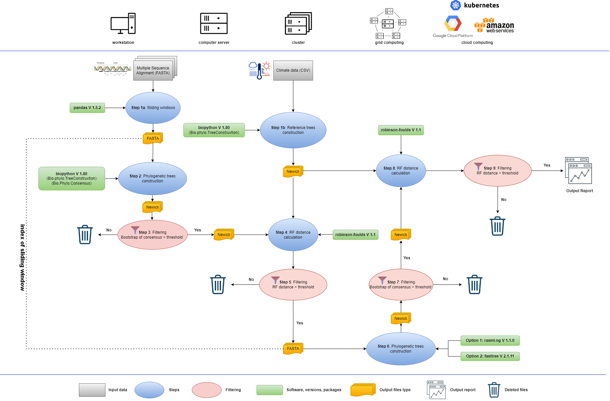
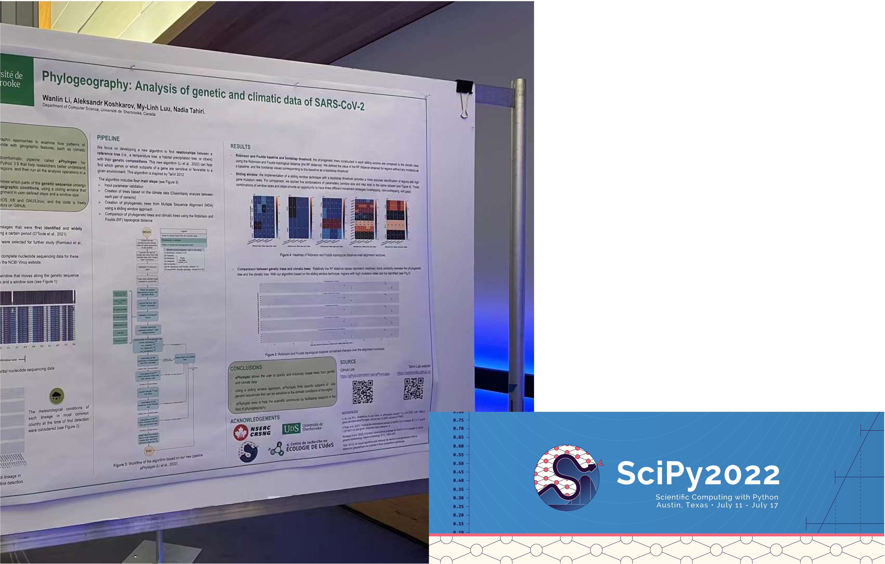

Using the workflow management system Snakemake, we have developed a new phylogeographic pipeline, aPhyloGeo.
aPhyloGeo is a user-friendly, fast, efficient, and comprehensive pipeline that can find relationships
between a reference tree (i.e., a tree of geographic species distributions, a temperature tree, a habitat precipitation tree or others)
with their genetic compositions.


As a mother, you do everything possible to protect your baby during the early stages of pregnancy.
Despite the protective role of the placenta, many molecules, including those from drugs and even the environment,
are present in your bloodstream and manage to cross the placenta.
QSAR aims to use machine learning to build models that predict the ability of chemical molecules to cross the placenta.

aPhyloGeo is a bioinformatics pipeline dedicated to the analysis of phylogeography.
With the help of aPhyloGeo, we investigate how the differentiation divergence pattern within SARS-CoV-2
coincides with geographic features, such as climatic features.
This project covers the linear regression model. It allows us to assess the relationship between variables in a data set and
a continuous response variable.
The project consists of three parts:
(1) Exploratory data analysis (EDA) of the
Ames Housing dataset.
(2) Model assumptions, selection, and interpretation.
(3) Model validation and out-of-sample prediction.

This project covers commonly used statistical inference methods for numerical and categorical data.
Research question: Is the university degree related to the income of American citizens between 2008-2012?
Audiences' opinion is significant for the development of movies.
It's interesting to know whether there is an association between the audience score and Oscar awards.

Create convolutional neural network models to make diagnoses of lung and brain disorders.
Build risk models and survival estimators for heart disease.
Build a treatment effect predictor, apply model interpretation techniques, and use natural language processing to extract information from radiology reports.
Credit card payments make up a significant portion of financial transactions worldwide.
They offer ease and efficiency unmatched by other payment types, especially for transactions made over the Internet.
But with such ubiquity comes opportunities for criminals to commit fraud.
ATAC-seq (Assay for Transposase-Accessible Chromatin with high-throughput sequencing) is
a method for determining chromatin accessibility across the genome.
We analyze publicly available transcriptomic and epigenetic data to better describe the origin and role of a CD8+ T cell subpopulation.
This workflow used Genrich as the peak-caller.
ATAC-seq (Assay for Transposase-Accessible Chromatin with high-throughput sequencing) is
a method for determining chromatin accessibility across the genome.
We analyze publicly available transcriptomic and epigenetic data to better describe the origin and role of a CD8+ T cell subpopulation.
This workflow used MACS2 as the peak-caller.
Prediction of RNA structure with Biopython
Phylogeny analysis with biopython